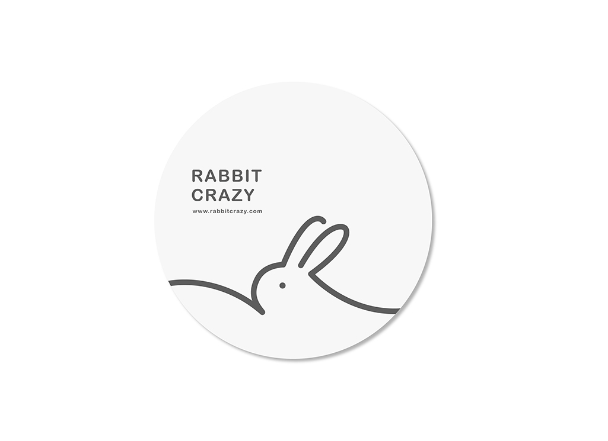
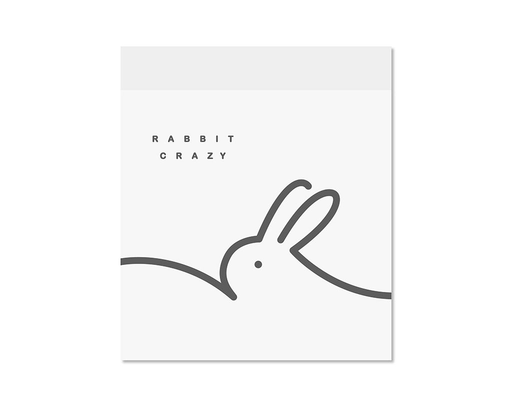

2015 Red Dot Award
Design | Brand
「舞馬迎春禮盒」從天地運行的抽象概念，提取出金馬年的包裝圖像、色系並以唐代的藝術文化-「舞馬」為繆思，將記憶中與春節相關的吉祥瑞慶安排於圖像中隨著馬的婆娑舞姿，展現春節的喜慶歡騰。
"Dance Ma Yingchun gift" from the world of running abstraction, Kinmen and Matsu in the extracted image packaging, color and art and culture of the Tang Dynasty - "Dancing Horses" as muse, the memory associated with the Chinese New Year Jixiang Rui Qing with the arrangement in the image of horses whirling dance, joyous New Year show.


